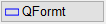
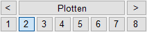
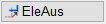

Drucken der ganzen Zeichnung oder eines Zeichnungsteils. Das zuletzt benutzte Ausgabeprofil wird vorgeschlagen.
Funktionen |
Beschreibung |
|---|---|
Ausschnitt mit vorgegebener Größe drucken; Ausschnittsgröße kann angepasst werden. |
|
Beliebigen Ausschnitt drucken. |
|
Plotfläche ausgeben. |
|
Blattrahmen ausgeben. |
|
Plotter-Konfiguration; Druckeinstellungen; Ausgabeprofile. |
Optionen |
Beschreibung |
|---|---|
 |
Hochformat einstellen | Querformat einstellen. |
 |
Auswahl des Ausgabeprofils. |
Blattrahmen einfügen | Blattrahmen verschieben. |
|
Alle Blattrahmen einblenden | Alle Blattrahmen ausblenden. |
|
Druck- bzw. Freibereich korrigieren | Blattrahmen löschen. |
|
Blattrahmen umbenennen. |
|
|
Differenz-Eingabe ausschalten | Differenz-Eingabe einschalten. |
 |
Zeichenelemente des Blattrahmens ausblenden [EleAus] oder einblenden [EleAn]. (Funktion [RaEinf]). |


Zugehörige Aufgaben: